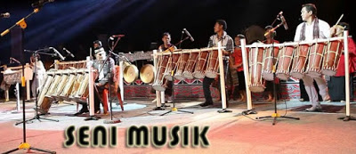

Seni
Secara Etnik Batak Toba itu salah satu dari banyak etnik yang bermukim di Provinsi Sumatera Utara. Yang kaya dengan keindahan wisatanya sampai saat ini orang touris sangat banyak berkunjung.Seperti yang kita ketahui Batak Toba berada dari daerah di sekitar tepian Danau Toba dan Pulau Samosir, hingga ke dataran tinggi Silindung dan Pahae ini,budaya Batak Toba memiliki budaya yang unik dengan ragam kesenian tarian yang menarik. Sehingga budaya Batak Toba cukup banyak mendapatkan perhatian, baik oleh para akademisi maupun wisatawan.
Berikut 6 Ragam Seni Budaya Batak Toba
Seni Tari
Seni tari (Tortor) dalam budaya Batak Toba itu yang paling populer adalah Tortor. Tortor masih bisa disaksikan dalam acara pesta masrayakat Batak Toba seperti acara pesta pernikahan (Suka Cita),pesta meninggal Dunia (Duka Cita) dan bisa juga dilakukan upacara ritual,sebuah tarian yang sangat populer yang menjadi ajang pertunjukkan yang biasa disajikan oleh suku Batak Toba. Manortor yang artinya (menari) secara filosofis merupakan lambang bentuk Syukur kepada Mula jadi Nabolon atau Sang pencipta, dan rasa menghormati untuk hula-hula. Tari tortor menjadi warisan budaya Batak Toba yang masih ditampilkan sampai sekarang,
Seni Rupa
Seni rupa, Batak Toba memiliki sebuah keterampilan seperti membuat ukiran dan patung.membuat sior dan hujur (panah), losung gaja (lesung besar), dan boneka sigale-gale (boneka mistis dari kayu yang bisa menari) dan parpagaran (alat untuk memanggil kekuatan gaib) Ukiran-ukiran yang berukiran gorga atau ornamen-ornamen rumah adat mereka, menjadi bukti keindahan dari seni pahat masyarakat Batak Toba
Seni Sastra
Ada banyak seni sastra yang berkembang dalam kehidupan masyarakat Batak Toba, meliputi sastra lisan dan sastra tulisan. Beragam cerita rakyat, seperti terjadinya Danau Toba dan Batu Gantung, menjadi legenda yang sampai saat ini masih bisa kita dengar. Pantun-pantun yang disebut umpasa juga ada dalam kebudayaan Batak Toba, yang menjadi kearifan lokal etnik tersebut. Semua seni sastra itu memiliki makna filosofis dalam kehidupan mereka.
Seni Kerajinan
Tidak usah jauh-jauh Ulos adalah sebuah kerajinannya anda pasti tidak asing dengar kain ulos sebagai ciri khas dari suku Batak. Kain ulos merupakan pakaian tradisional Batak dan menjadi objek cinderamata yang biasa dibawa pulang oleh para wisatawan dan terlebih acara pesta. Pengrajin kain ulos memiliki keterampilan yang bernama martonun, yaitu menenun kain ulos dengan alat tenun tradisional Batak.Pembuatan Kerajinan Ulos hingga saat ini masih bisa dijumpai di pedalaman Pulau Samosir dan daerah-daerah lainnya di sekitar Danau Toba.
Seni Musik
Suku Batak Toba memiliki sejumlah alat musik tradisional dalam pelaksanaan upacara ritual dan adat yaitu gondang sabangunan dan gondang hasapi. Musik yang dimainkan dengan dua alat tersebut biasa digunakan dalam upacara atau ritual-ritual khusus yang sudah menjadi tradisi suku Batak Toba, sejumlah alat musik ,taganing,hesek,seruling,ogung,dan masih banyak lagi merupakan alat musik tradisional yang paling sering dimainkan. Tapi Menurut mitologi etnik Batak Toba, kedua alat musik gondang sabangunan gondang hasapi merupakan milik Mulajadi Nabolon, sehingga harus dimainkan untuk menyampaikan permohonan kepada sang dewa.
Seni Tenun
merupakan teknik dalam pembuatan kain yang dibuat dengan prinsip yang sederhana, yaitu dengan menggabungkan benang secara memanjang dan melintang. Dengan kata lain bersilangnya antara benang lusi dan pakan secara bergantian. Kain tenun biasanya terbuat dari serat kayu, kapas, sutra, dan lainnya. Dalam kerajinan Batak Toba juga terkenal seni tenun atau bertenun (martonun). Keterampilan ini biasanya dikuasai kaum perempuan. Mereka disebut partonun (tukang tenun). Hasil tenunan mereka inilah yang disebut ulos, atau kain tradisional Batak. Hingga saat ini partonun masih bisa ditemui di pedalaman Tanah Batak. Namun demikian, partonun juga sudah banyak kita temukan di kota-kota.
Itulah Semua jenis kesenian tradisional dalam budaya Batak Toba yang sampai sekarang tidak terpisahkan dalam kehidupan mereka dan menjadikan lambang identitas dan symbol eksistensi suku Batak di tanah Toba.